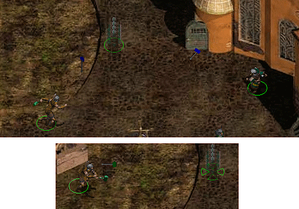
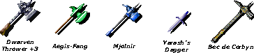

Introduction
In Baldur's Gate II, there are several war hammers that can be
thrown, including the Dwarven Thrower +3 and Aegis-Fang. Although
they are hammers, when they are thrown they actually appear as axes
flying through the air instead of hammers. This modification adds
animations so that thrown hammers appear as such rather than as
axes.

In addition, this mod adds a few magic items, including the thrown
hammer Mjolnir. The other items are Yarash's Dagger and the war
hammer Bec de Corbyn (Raven's Beak). They are unique items and will
appear for sale in random stores.

•Back to top
Compatibility
This mod works with BG2: Throne of Bhaal. It will not
install if Throne of Bhaal is not present, due to its use of
projectile identifiers. Make sure your game has the latest patch.
Check the ReadMe files related to your patch in your game folder
and the BioWare
website if necessary.
This mod will also work with all mods, including Baldur's Gate Tutu (and
EasyTutu) and Baldur's Gate
Trilogy. You can install this mod during an existing game,
though you may miss some items unless you start a new game.
This mod can go anywhere in an install order, but ideally after
patches and fixpacks and before global tweaks and GUI mods. If you
want the weapons in this mod to take the "Sensible Weapon
Restrictions" from Ashes of Embers, install Thrown Hammers before
AoE.
•Back to top
Installation
Note: If you've previously installed the mod,
remove it before extracting the new version. To do this, run
setup-hammers.exe (or .command), uninstall all
previously installed components and delete the hammers folder. When
installing or uninstalling, do not close the DOS window by clicking on the
X button! Instead, press the
Enter key when instructed to do so.
You can extract files from the archive using WinRAR, ZipGenius or another
file compression utility that handles .rar files.
Windows
Extract the contents of the mod to the folder of the game you wish
to modify (BG2,
BGT or EasyTutu).
On successful extraction, there should be a hammers folder and a
setup-hammers.exe file in your game folder. To install, simply
double-click setup-hammers.exe and follow the
instructions on screen.
Run setup-hammers.exe in your game folder to
reinstall, uninstall or otherwise change components.
Mac OS X
Extract the contents of the mod to the folder of the game you wish
to modify. On successful extraction, there should be a hammers
folder and a setup-hammers.command file in your game folder. To
install, simply double-click setup-hammers.command
and follow the instructions on screen.
Linux
Extract the contents of the mod to the folder of the game you wish
to modify. Download the latest Linux version of WeiDU and copy WeiDU and
WeInstall to /usr/bin. Then open a terminal and cd to your
BG2 installation
directory.
Optional: run 'tolower' and answer 'Y' to both queries. You can
avoid running the second option (linux.ini) if you've already ran
it once in the same directory. To save time, the archive is already
tolowered, so there's no need to run the first option (lowercasing
file names) either, if you've extracted only this mod since the
last time you lowercased file names. If unsure, running tolower and
choosing both options is the safe bet.
Run WeInstall setup-hammers in your game folder to
install the mod. Then run wine BGMain.exe and
start playing.
•Back to top
Credits
Sam produced the animations, Lord Delekhan gave permission to use
some items and Miloch coded the mod.
Programs/tools used in creation:
Thrown Hammers is copyright © 2008 by Miloch and Sam. This work
(including all code and documentation) is licensed under a Creative Commons
Attribution-Noncommercial 3.0 Unported License. You are free to
share (copy, distribute and transmit) and to remix (adapt) this
work, except for commercial purposes. See the Creative
Commons Public License for more details. You may use this mod
content in other mods with or without crediting the source (though
credit is nice).
•Back to top